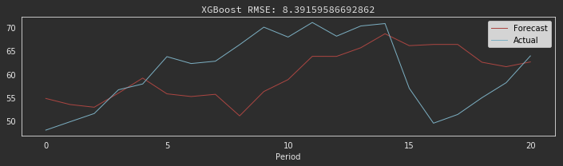
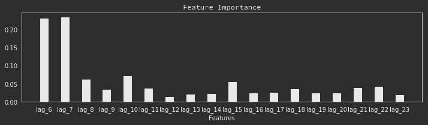
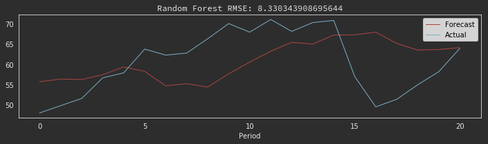
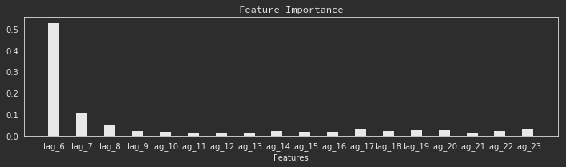

Time Series Forecasting Techniques Pt. 1
Time series forecasting has significant importance in many practical areas from economics to workload planning. We are able to use modern machine learning techniques for time series analysis with a little tweaking to the data. Because supervised learning models learn from a set of features, we will need to perform some feature engineering to extract features from time-series data - which typically only contain a timestamp and label.
For this example, I am going to forecast Crude Oil prices per barrel in US dollars using various ensemble Methods and compare the overall performance of each.
The dataset provides the monthly price per barrel of crude oil in USD from Jan 1980 to May 2019. We can see a huge change in the price of oil after 2000 so I’m going to use this as a cutoff point.
For this experiment, I will train each model on data from 2000 to 2017 and test from 2017 to present. To asses the model performance, I will use the root mean squared error metric which describes the average difference between the forecasted values vs the real value.
Gradient Boosted Models
Gradient Boosted Models work by sequentially adding predictors to an ensemble, each one fitting (and therefore correcting) to the residual error of its predecessor. Below are the predictions and the accuracy of the model:
Model Details
To understand how the model develops its prediction, let's look at how it places importance on the features:
So we can see that the most emphasis on lag 6, 7 and 10 and 15 and the feature importance is fairly distributed. This means the model generalizes to the data without any regularization.
Ensemble Methods
Ensemble Methods, specifically Random Forests, train many decision trees on subsets of features and average the predictions. The forecast we get after training our random forest model is:
Model Details
The top features that affect the output are as follows:
We can see that we might need to include some regularization in our model because of the overemphasis of feature Lag_6 - however, the model still performs well. To further understand how these models work, there are several diagnostic techniques we can use including dependency plots to see how much influence each feature actually has.